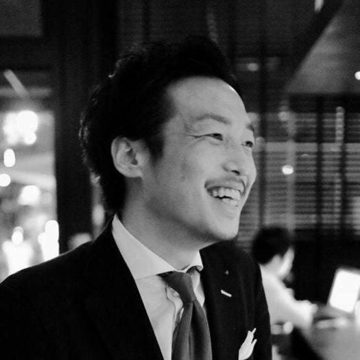
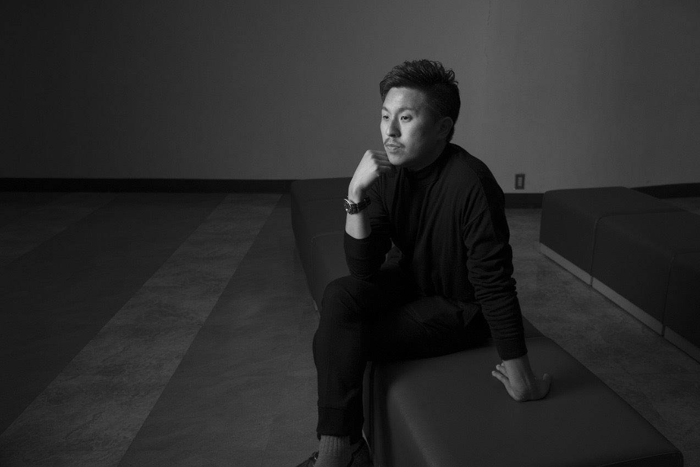
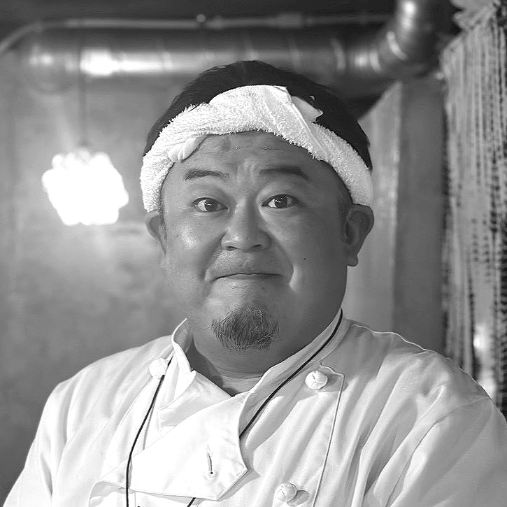

Representative
鳥塚 健太郎
紹介文を追加予定です。
宮古島の美しい海と文化、人とのつながりを未来へつなぐために活動する地域共創団体です。

鳥塚 健太郎
代表理事

関野 佑也
理事

古賀 裕太郎
理事

金沢 大基
理事

関野 秀平
理事
平岩 拓路
理事
倉成 雄介
理事
Representative
紹介文を追加予定です。
Director
株式会社iD／株式会社cica 代表取締役。JTB、広告会社、メディア会社を経て2013年に株式会社iDを創業。旅・食・地域をテーマに事業を展開し、2019年には害獣扱いされていた広島県安芸高田市の鹿を「Premium DEER 安芸高田鹿」としてブランド化。2024年に株式会社cicaを設立し地域資源を活用したプロジェクトを多数手がける。現在は食育や探究学習、地域共創を推進するとともに、宮古島の海洋環境をテーマにした新たな活動にも取り組んでいる。
Director
飲食、宿泊業専門経営コンサルタントとして、事業再生から組織改革、経営戦略立案まで行う。プロデューサーとして映画製作を行っており、宮古島では、マリンショップ、居酒屋ブランド粋蓮を展開。2026年5月からDMMオンラインサロンを開設、「現場で使える経営学」を展開している。